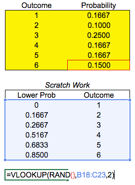

Samuel Burer
August 2022
In August, Walton Bookstore must decide how many of next year’s calendars to order
Each calendar costs the bookstore $7.50 and sells for $10
After January 1, all unsold calendars will be returned to the publisher for a refund of $2.50 per calendar
The mean historical demand for calendars is 200
Walton decides to order 200 calendars
Is this a good decision?
See flaw_of_averages.xlsx (tabs model and uniform)
Most decisions are made in the face of uncertainty, e.g., random events out of our control
Said differently…
If we could predict the future, the best course of action would be easy to choose
But because we can’t, we make our best guess based on whatever partial information we have at the moment
Today, we will learn about a specific tool (Monte Carlo simulation) to describe the uncertainty in complex situations
We can then make decisions based on the simulation
the representation of the operation or features of one process or system through the use of another
Random sampling is the act of using a computer to generate a number from a given probability distribution
It’s like rolling a die, except the die can represent any random event that we wish
If we roll the die many times, the “how many” is called the number of trials or the sample size; denoted by \(n\)
Single random number from continuous uniform distribution between \(L\) and \(U\):
L + RAND()*(U - L)Single random integer from discrete uniform distribution between \(L\) and \(U\) (inclusive):
RANDBETWEEN(L, U)Single random number from normal distribution with mean \(\mu\) and standard deviation \(\sigma\):
NORM.INV(RAND(), mu, sigma)Single random variable from binomial distribution with \(n\) trials, each having probability \(0 < p < 1\) for success:
BINOM.INV(n, p, RAND())From specified discrete distribution:

Imagine a situation having uncertain inputs with known probability distributions
MCS simulates the uncertain inputs (and their consequences) via repeated random sampling
Shows the effect of uncertain inputs in a statistical setting
See flaw_of_averages.xlsx (tab normal) and birthdays.xlsx
How do you know what distribution to use for a given uncertain input?
Typically, you can make an educated guess either from historical data or from insight gained through experience
In fact, a relative histogram from historical data is a good way to create a discrete distrubition from which to sample
See random_homes.xlsx
Suppose you have two or more random inputs
In MCS, we assume that these random inputs are independent of one another, i.e., their values are not correlated
For example, high values of one input are not associated with high values of another
In many situations, this is an unrealistic assumption, i.e., the variable should be correlated
If your inputs are strongly correlated, then more sophisticated techniques and software are required
Monte Carlo simulation is a good tool for exploring an extremely important, albeit theoretical, concept in probability: the Central Limit Theorem
The Central Limit Theorem says that, when you take a large enough random sample from a population, then the sample mean \(\bar x\) is distributed normally—even if the population itself is not normally distributed
More precisely, if \(X_1, \ldots, X_n\) are the random values gotten when you take a random sample of size \(n\) from a random variable \(X\), then the sample mean \[\bar X = \frac{X_1 + \cdots + X_n}{n}\] is approximately normally distributed—as long as \(n\) is large enough
See central_limit_theorem.xlsx